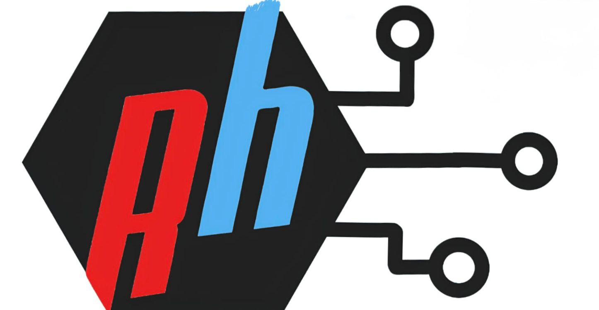

Equipo RoTech
El robot seguidor de línea de RoTech
Super Follower V3
Avanzando lento pero seguro
¿Qué es un seguidor de línea?
Es un robot autónomo que recorre una pista siguiendo una línea marcada en el suelo. Sus sensores leen la línea miles de veces por segundo y el control corrige el rumbo de los motores para mantenerse sobre ella, sin que nadie lo maneje.
El Super Follower V3 es la tercera versión del robot del equipo RoTech, construida para competir y mejorar en cada prueba.